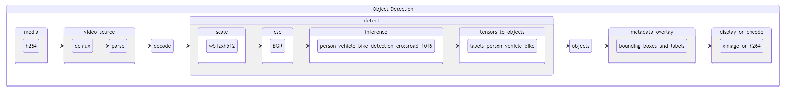

Quick Start Guide for Media Analytics on Intel® Data Center GPU Flex Series#
These steps provide instructions on how to download and launch the Media Analytics container and run an object detection pipeline using Intel® Deep Learning Streamer (Intel® DL Streamer) on Intel® Data Center GPU Flex Series.
Optimized For |
Description |
|---|---|
OS |
Ubuntu* 22.04 |
What You Will Learn |
How to launch a basic object detection pipeline. |
Time to Complete |
10 minutes |
Purpose#
{kind=link}
This quick start guide uses the gst-launch-1.0 utility to launch a
simple media analytics pipeline performing:
Media decode
Inference using MobileNetV2 + SSD-based network for Person/Vehicle/Bike Detection
Overlay of detected objects.
Key Implementation Details#
Configuration |
Default Setting |
|---|---|
Target device |
Intel® Data Center GPU Flex Series |
Input format |
mp4 |
Output format |
XDisplay or mp4 |
Output resolution |
same as input |
Perform the following steps on a Linux Ubuntu 22.04 System#
Step 1: Allow connection to X server#
xhost local:root
setfacl -m user:1000:r ~/.Xauthority
Step 2: Launch Intel® DL Streamer Container#
DEVICE=${DEVICE:-/dev/dri/renderD128}
DEVICE_GRP=$(ls -g $DEVICE | awk '{print $3}' | \
xargs getent group | awk -F: '{print $3}')
docker run -it --rm --net=host -e no_proxy=$no_proxy -e https_proxy=$https_proxy -e socks_proxy=$socks_proxy -e http_proxy=$http_proxy \
-v ~/.Xauthority:/home/dlstreamer/.Xauthority -v /tmp/.X11-unix -e DISPLAY=$DISPLAY \
--device $DEVICE --group-add $DEVICE_GRP \
intel/dlstreamer:dgpu-dpcpp-devel /bin/bash
Step 3: Download Sample Media#
wget "https://www.pexels.com/video/1721294/download/?w=640&h=360" -O pexels_1721294.mp4
Step 4: Download Object Detection Model#
omz_downloader --name person-vehicle-bike-detection-crossroad-1016
Step 5(a): Run Object Detection Pipeline and Display Results#
gst-launch-1.0 filesrc location=pexels_1721294.mp4 ! decodebin ! video/x-raw\(memory:VAMemory\) ! \
gvadetect model=./intel/person-vehicle-bike-detection-crossroad-1016/FP16-INT8/person-vehicle-bike-detection-crossroad-1016.xml \
model-proc=/opt/intel/dlstreamer/samples/gstreamer/model_proc/intel/person-vehicle-bike-detection-crossroad-1016.json \
pre-process-backend=va-surface-sharing \
device=GPU ! \
meta_overlay device=GPU ! \
videoconvert ! ximagesink
Step 5(b): Run Object Detection Pipeline and Save Results#
gst-launch-1.0 filesrc location=pexels_1721294.mp4 ! decodebin ! video/x-raw\(memory:VAMemory\) ! \
gvadetect model=./intel/person-vehicle-bike-detection-crossroad-1016/FP16-INT8/person-vehicle-bike-detection-crossroad-1016.xml \
model-proc=/opt/intel/dlstreamer/samples/gstreamer/model_proc/intel/person-vehicle-bike-detection-crossroad-1016.json \
pre-process-backend=va-surface-sharing \
device=GPU ! \
meta_overlay device=GPU ! \
gvametaconvert json-indent=4 ! gvametapublish file-path=detection_results.json ! \
vah264enc ! h264parse ! mp4mux ! filesink location=detection_output.mp4
*Other names and brands may be claimed as the property of others.